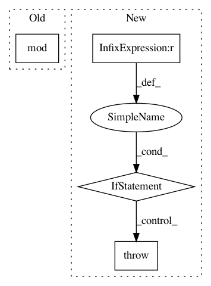

693bd2d8c958cd343d1c6ea4f132ad8714a0c116,mne/forward/forward.py,,compute_orient_prior,#Any#Any#Any#,998
Before Change
if not is_fixed_ori and loose < 1:
logger.info("Applying loose dipole orientations. Loose value "
"of %s." % loose)
orient_prior[np.mod(np.arange(n_sources), 3) != 2] *= loose
return orient_prior
After Change
raise ValueError("loose value should be between 0 and 1, "
"got %s." % (loose,))
orient_prior = np.ones(n_sources, dtype=np.float)
if loose > 0.:
if is_fixed_ori:
raise ValueError("loose must be 0. with forward operator "
"with fixed orientation, got %s" % (loose,))
if loose < 1:
if not forward["surf_ori"]:
raise ValueError("Forward operator is not oriented in surface "
"coordinates. loose parameter should be 1 "
"not %s." % (loose,))
logger.info("Applying loose dipole orientations. Loose value "
"of %s." % loose)
orient_prior[0::3] *= loose
orient_prior[1::3] *= loose
return orient_prior
def _restrict_gain_matrix(G, info):
In pattern: SUPERPATTERN
Frequency: 3
Non-data size: 4
Instances
Project Name: mne-tools/mne-python
Commit Name: 693bd2d8c958cd343d1c6ea4f132ad8714a0c116
Time: 2019-03-01
Author: larson.eric.d@gmail.com
File Name: mne/forward/forward.py
Class Name:
Method Name: compute_orient_prior
Project Name: librosa/librosa
Commit Name: cfff799d604ea57385ea2c0e49d6ed9662a38a17
Time: 2015-07-01
Author: ebattenberg@gmail.com
File Name: librosa/core/constantq.py
Class Name:
Method Name: cqt
Project Name: asyml/texar
Commit Name: b5c8bdd81be77eac5434a476f62c5bdef56f1838
Time: 2019-07-01
Author: haoranshi97@gmail.com
File Name: texar/modules/embedders/position_embedders.py
Class Name: SinusoidsPositionEmbedder
Method Name: __init__